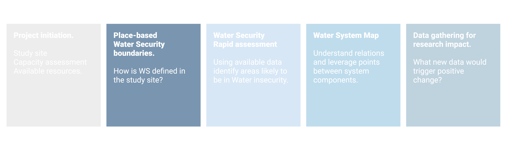
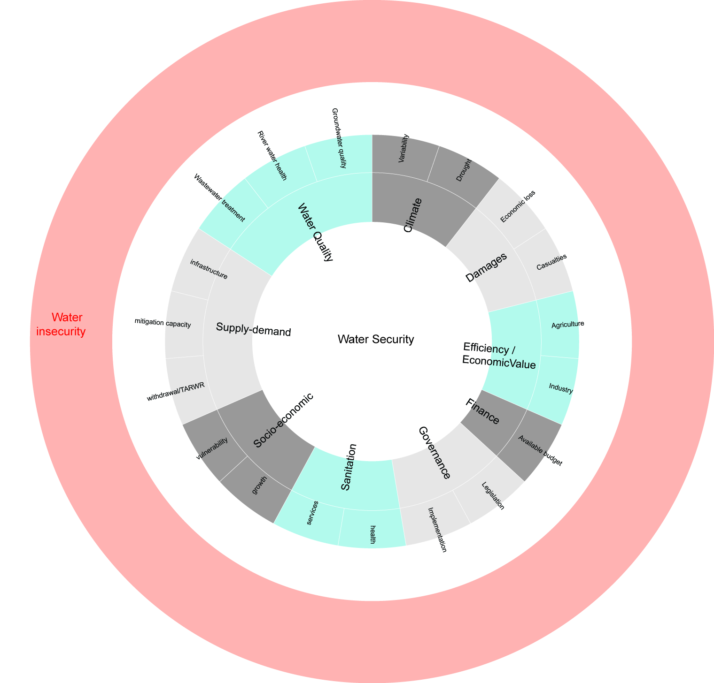

Chapter 2 WS boundaries

2.1 Concepts
2.1.1 Water Security
At a theoretical level, different definitions for Water Security (WS) exists and generally revolve around four main themes: water availability, human vulnerability to hazard, human needs and sustainability (Cook and Bakker 2012). One of the most used definition defines WS as: “the reliable availability of an acceptable quantity and quality of water for health, livelihoods and production, coupled with an acceptable level of water-related risks” (Grey and Sadoff 2007). No globally accepted dentition exist due to the complexity of WS and to the diversity of contexts that can be found around the globe.
At an operational level, several tools exist to assess WS and water vulnerability (Plummer, Loë, and Armitage 2012). Ws is usually divided into dimensions and sub-dimension (water resources, economics, institutions, social, physical environment) with associated indicators.Tools have been created for specific aspects of WS such as scarcity (Brown 2011), for freshwater (Norman et al. 2013), for specific geographical context such as small islands (Holding and Allen 2016), for different geographical scales.
In the diagram below we can observe that WS is divided into ten dimension (water quality, climate…). In the case of water quality, three sub-dimension exists: wastewater, groundwater (GW) and surface water quality. In this case each sub-dimension is assessed using one parameter (% of treated discharges, GW quality and surface water quality). in the last column parameters that could be used for each indicator are shown.
2.1.2 A place-based WS definition
Since no universal definition and assessment tool exist, there is a need to approach WS from a place-based (and time-based) perspective. The proposed process suggests to start looking at existing tools and understanding what dimension, subdimension and indicators could be used. The choice of parameters is left for a later stage of the process.
The following table shows the dimension and indicators used across some WS indexes (Vörösmarty et al. 2010; Gain, Giupponi, and Wada 2016; Lautze and Manthrithilake 2014; Mason and Calow 2012; ADB 2013; Gassert et al. 2014) and SDGs 6 and 11.
| Dimension | Indicator | Frequency |
|---|---|---|
| Climate | Rainfall variability: Coefficient of variability for CMI (StdDev(CMI)/Mean(CMI); unitless | 0.125 |
| Climate | Climate variability:Risk index based on topographical variability, water resources, water access, water utilisation, human and institutional capacity | 0.125 |
| Climate | Interannual, or between year, variability is defined as the coefficient of variation (CV) of available water for each sub-basin. | 0.125 |
| Climate | Seasonal variability measures the average within-year variability of available water supply, including both renewable surface and groundwater supplies. | 0.125 |
| Climate | Drought Index is calculated usingPCR-GLOBWB. The values with higher DI lead to decrease water security. (Source: Wada 2012) | 0.125 |
| Damages | Direct economic loss in relation to global GDP, damage to critical infrastructure and number of disruptions to basic services, attributed to disasters | 0.250 |
| Damages | Flood mortality risk :Risk calculated as function of hazards (GIS data), vulnerability (statistical analysis of historical events), and modelled population exposure; | 0.250 |
| Damages | Number of deaths, missing persons and directly affected persons attributed to disasters per 100,000 population | 0.125 |
| Damages | Riverine flood risk measures the percentage of population expected to be affected by riverine flooding in an average year, accounting for existing flood-protection standards (frequencies above 10% are considered) | 0.125 |
| Damages | Coastal flood risk measures the percentage of the population expected to be affected by coastal flooding in an average year, accounting for existing flood protection standards. | 0.125 |
| Damages | Flood frequencyindex Source:Center forHetal 2005 | 0.125 |
| Demand | total withdrawals /TARWR | 0.625 |
| Demand | TARWR/population (FAO AQUASTAT) | 0.375 |
| Demand | Dam storage capacity / population*100,000 | 0.250 |
| Demand | TARWR/HDI (FAO AQUASTAT) | 0.250 |
| Demand | Groundwater table decline measures the average decline of the groundwater table as the average change for the period of study (1990–2014) | 0.250 |
| Demand | Level of water stress: freshwater withdrawal as a proportion of available freshwater resources | 0.250 |
| Demand | River water health index, water resource development: relative water consumption compared to supply | 0.250 |
| Demand | River water health index, water resource development: agriculture sector water stress | 0.250 |
| Demand | dynamic TARWR/population | 0.125 |
| Demand | Aggregate upstream water demand/total water supply | 0.125 |
| Demand | Water withdrawals/ available water, adjusted for estimated Environmental Water Requirement; GWSP | 0.125 |
| Demand | Consumption rate (net virtual water consumed relative to water with- drawn for industry) | 0.125 |
| Demand | Percentage of Renewable Water Resources (RWR) available in excess of environmental water requirement (EWR). That is, [RWR - (environmental water requirement + withdrawn water)]/RWR | 0.125 |
| Demand | Water supply (%) | 0.125 |
| Demand | Geospatially derived water withdrawals/ dynamic TARWR; unitless | 0.125 |
| Demand | Various e.g. dependence on virtual water imports; national blue, green and grey water footprints of consumption AND/ OR consumption; | 0.125 |
| Drinking water | Proportion of population using safely managed drinking water services | 0.875 |
| Ecosystems | River water health index, water resource development: dam density | 0.250 |
| Ecosystems | River water health index, water resource development: river fragmentation | 0.250 |
| Ecosystems | Geospatial estimate on river fragmentation | 0.250 |
| Ecosystems | Change in the extent of water-related ecosystems over time | 0.250 |
| Ecosystems | River water health index, watershed disturbace: cropland | 0.250 |
| Ecosystems | River water health index, watershed disturbace: imperviousness | 0.250 |
| Ecosystems | River water health index, watershed disturbace: livestock density | 0.250 |
| Ecosystems | River water health index, watershed disturbace: wetland disconnection | 0.250 |
| Ecosystems | River water health index, biotic factor: nonnative species | 0.250 |
| Ecosystems | River water health index, biotic factor: nonnative species richness | 0.250 |
| Ecosystems | River water health index, biotic factor: catch pressure | 0.250 |
| Ecosystems | River water health index, water resource development: residency time change downstream from dams | 0.125 |
| Ecosystems | Annual change in freshwater species; | 0.125 |
| Ecosystems | Water Resource development : flow disruption | 0.000 |
| Efficiency / Value | River water health index, biotic factor: aquaculture | 0.250 |
| Efficiency / Value | Value added (value of output less value of immediate consumption) by agriculture/ agricultural water withdrawals; AQUASTAT | 0.250 |
| Efficiency / Value | Value added by industry/ industrial water withdrawals | 0.250 |
| Efficiency / Value | Aquaculture production/ population; tonnes per capita | 0.250 |
| Efficiency / Value | Change in water-use efficiency over time | 0.125 |
| Efficiency / Value | The Peak RepRisk country ESG risk index quantifies business conduct risk exposure related to environmental, social, and governance (ESG) issues in the corresponding country. | 0.125 |
| Efficiency / Value | Productivity of irrigated agriculture | 0.125 |
| Efficiency / Value | Productivity (financial value of industrial goods relative to industrial water withdrawal) | 0.125 |
| Efficiency / Value | Utilization of total hydropower capacity | 0.125 |
| Efficiency / Value | ratio of hydropower to total energy supply | 0.125 |
| Finance | Amount of water- and sanitation-related official development assistance that is part of a government-coordinated spending plan | 0.125 |
| Management | Proportion of transboundary basin area with an operational arrangement for water cooperation | 0.375 |
| Management | Proportion of local administrative units with established and operational policies and procedures for participation of local communities in water and sanitation management | 0.375 |
| Management | World Governance Index (Kaufmann etal 2010) | 0.125 |
| Management | Transboundary legal framework (Source: http://twap-rivers.org/indicators/) | 0.125 |
| Management | Percentage of key water indicators reliably tracked by national government; percentage | 0.125 |
| Management | Degree of integrated water resources management | 0.125 |
| Management | Transboundary political tensions : http://twap-rivers.org/ indicators/) | 0.125 |
| Quality | Proportion of domestic and industrial wastewater flows safely treated | 0.500 |
| Quality | Proportion of bodies of water with good ambient water quality | 0.250 |
| Quality | River water health index, pollution (different parameters) | 0.250 |
| Quality | Change in chlorophyll/ turbidity/ suspended solids (MODIS) | 0.125 |
| Quality | Coastal eutrophication potential (CEP) measures the potential for riverine loadings of nitrogen (N), phosphorus (P), and silica (Si) to stimulate harmful algal blooms in coastal waters. | 0.125 |
| Quality | Water quality index Srebotnjak etal 2012) | 0.125 |
| Resilience | resilience (percentage of renewable water resources stored in large dams) | 0.125 |
| Resilience | Risk Management measures the extent to which countries are buffered from the effects of rainfall variability through large dam storage | 0.125 |
| Resilience | Independence measures the extent to which countries water and food supplies are safe and secure from external changes or shocks | 0.125 |
| Resilience | Independence from imported water and goods | 0.125 |
At the end of this step, a suitable set of dimension, sub-dimension (with associated thresholds for Water Security) should be identified.

2.2 Tools
2.3 An example: WQ for Akaki river
2.3.1 Identifying sub-dimension for Water Quality
Water quality was taken as an example on how to determine indicators for a given dimension. Five different indexes were compared (ADB, 2013; Babel and Shinde, 2013; Carden and Armitage, 2013; Hofste et al., 2019; Mason and Calow, 2012; UN-EP-DHI and UNEP, 2016) within the water quality dimension (Table 2). The comparison showed that the selected indicators indicators converge to three distinct areas: assessment of river water quality (WQ01), groundwater quality (WQ02) and amount of treated discharge to the environment (WQ03). At a more detailed level, the indexes often use different parameters or methods. Three sub-dimension were identified with associated indicators:
Dimension: Water Quality
Sub-dimensions:
surface water quality (WQ01) assessed using a suite of parameters that needs to be determined based on the project.
groundwater quality (WQ02) assessed using a suite of parameters to be determined based on the project.
Discharges to the environment assessed as the fraction of untreated wastewater (WQ03).
Threholds for Water Security:
WQ01 - surface water: to be determined using an existing River Water Quality Index
WQ02 - Groundwater quality: to be determined using an existing Groundwater Quality Index
WQ03 - 100% of wastewater is treated before being discharged. As a second step, national regulation on discharges should be met for >80% of cases.As a third step, 100% of wastewater are treated and complly with national regulation on discharges.
| Sub.dimension | Indicator | Frequency.of.use |
|---|---|---|
| Discharges | Treated wastewater | 60% |
| Discharges | Wastewater management (RPMS – KPI 6 / Green Drop) | 20% |
| Groundwater | Concentration of site-specific pollutants /Permissible limits of these pollutants | 20% |
| Groundwater | Groundwater quality (State report) | 20% |
| Surface water | Dissolved oxygen concentration/Permissible limit concentration | 20% |
| Surface water | Country-specific conditions (ADB, 2013) | 20% |
| Surface water | BOD 5-day values of river water samples. (Mehr, 2011) | 20% |
| Surface water | Change in percentage freshwater of samples meeting quality standards (from GEMS) | 20% |
| Surface water | Change in chlorophyll/ turbidity/ suspended solids; from MODIS satellite UN-Water EG-IMD (2009) | 20% |
| Surface water | Coastal eutrophication potential (CEP) s based on Billen and Garnier’s (2007) | 20% |
| Surface water | Dissolved inorganic nitrogen (DIN) (sub-indicator 4a) b) , Dissolved inorganic phosphorous (DIP) (sub-indicator 4b) | 20% |
| Surface water | Water resource quality (River health, State report) | 20% |